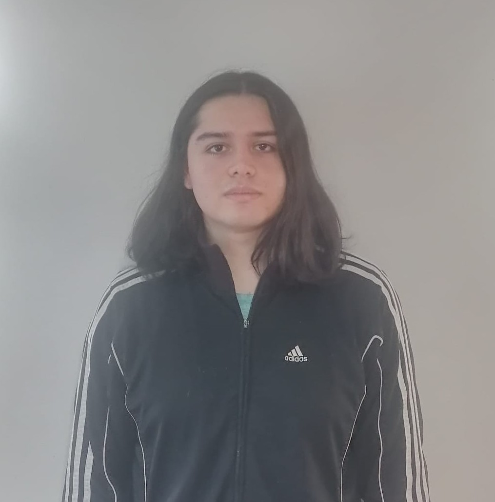
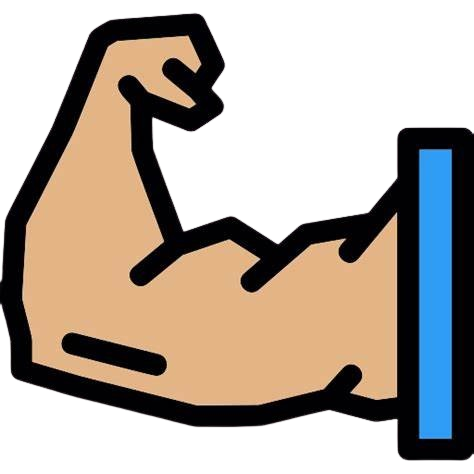

CV - BYRON MELO
 DATOS PERSONALES
DATOS PERSONALES
- Cédula: 1729309946
- Fecha de nacimiento: 28/12/2001
- Nacionalidad: Ecuatoriano - Quiteño
- Estado civil: Soltero
 FORTALEZAS
- Proactivo
- Creativo
- Responsable
- Paciente
- Honesto
IDIOMAS
- Español - Nativo
- Inglés - Intermedio (B2.2)
 CONTACTO
CONTACTO
- byronmelo37@gmail.com
- byronarmandom911@gmail.com
- 0960027228
- San Isidro de Puengasí
Primaria-Bachillerato
- 2005-2019
- Unidad Educativa Emaús de Fe y Alegría
- Septiembre 2019 - Enero 2020
- 1er Semestre en Física.
- Septiembre 2023 - Marzo 2024
- 1er Semestre en Química Pura
EXPERIENCIA LABORAL
Auxiliar de Bodega
- Super Mercado Mayorista "Don Gato"
- 7 de octubre del 2024 - 20 de diciembre del 2024
- Recepción y almacenamiento de mercancía
- Clasificación y organización de productos en la bodega
Mesero Polifuncional
- Restaurante "Encebollados de Doña Ceci"
- 11 de Enero del 2021 - 24 de mayo del 2021
- Tomar y servir pedidos de alimentos y bebidas
- Mantener la limpieza y organización del área de trabajo